Aircraft Pitch: Simulink Controller Design
Contents
State-feedback control with precompensation
In this page we will build off of the model constructed in the Aircraft Pitch: Simulink Modeling section to develop and investigate various control strategies. The model from which we are starting can be downloaded here, pitch_control.mdl. The complete model is shown below.
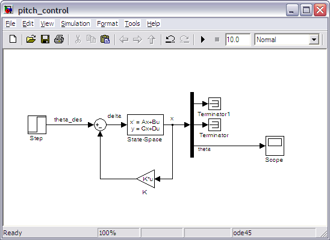
In the above, the State-Space Block is defined as shown below, where the C matrix is the identity matrix. This results in all three state variables being output such that they may be used by the state-feedback control law. If not all three state variables can be measured, then an observer needs to be designed.
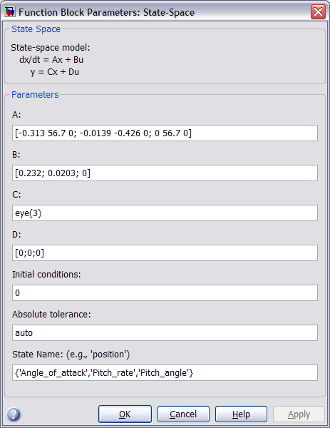
The closed-loop response under state-feedback control can be generated by running the above simulation model (press Ctrl-T or select Start from the Simulation menu). When the simulation is finished, double-click on the Scope and press the autoscale button to recreate the following figure.
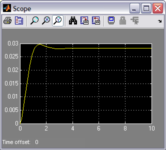
Examination of the above demonstrates that the rise time, settle time, and overshoot requirements are all met. However, the steady-state error requirement is not met since the response does not settle to within 2% of the commanded reference of 0.2 radians. In the Aircraft Pitch: State-Space Methods for Controller Design page, this deficiency was addressed by adding a constant precompensator Nbar = 7.0711 to scale the output to the desired level.
This precompensator can be implemented by adding a Gain block from the Simulink/Math Operations library to the Simulink model above. Insert the block between the Step block and the Sum block. Then double-click on the Gain block and enter "7.0711" in the Gain field. The resulting model is shown below.
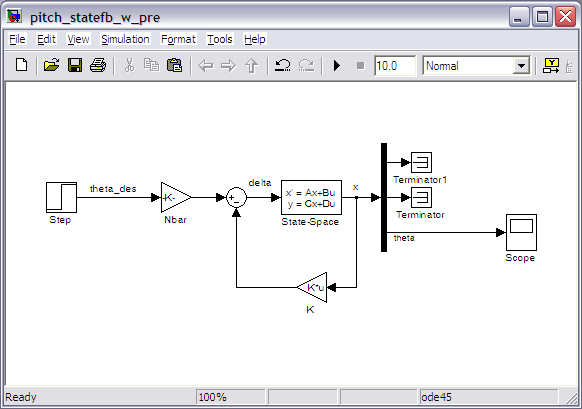
Running the simulation and autoscaling the output plotted in the scope will generate a response like the one shown below.
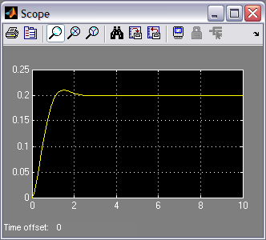
Notice from the above that the addition of the precompensator succeeded in driving the steady-state error to zero such that now all of the given requirements are satisfied.
System robustness
The drawback of using a precompensator like the one implemented above is that it is calculated on the basis of a model of the plant and is located outside of the feedback loop such that the output of the summing junction in the above model is no longer the true error. Therefore, if there are errors in the model or an unknown disturbance, the precompensator will not correct for them and there will be steady-state error.
In order to investigate this phenomenon, let's add a disturbance to our model as shown in the figure below. The disturbance is generated by a Step block with the Final value set to "0.2" and the Step time set to "3". The disturbance is modeled as entering the system in the same manner as the control input 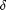. The additional Summing block is located as shown and the List of signs is entered "++|". Let's also observe the system's control input . To do this, first double-click on the Scope block and click on the Parameters button. Within the window that appears, enter "2" for Number of axes. Then branch off the signal and connect it to the new input of the Scope block. Also make sure the signals entering the Scope block are named. This is accomplished by double-clicking on a signal and then typing in its respective name. The resulting model should appear as follows.
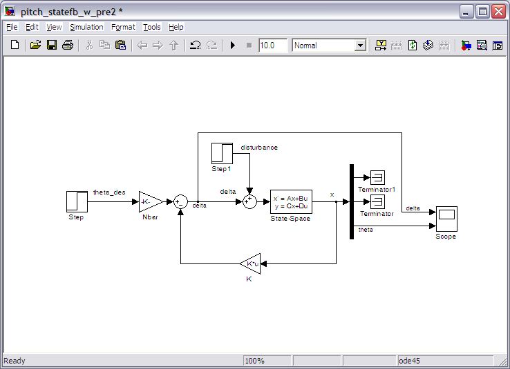
Running the simulation and autoscaling the output plotted in the scope will generate a response like the one shown below.
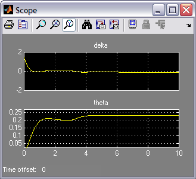
Inspection of the above plot demonstrates how the occurrence of the disturbance at a time of 3 seconds drives the system away from the desired steady-state value of 0.2 radians and the presence of the constant precompensator is not able to correct for the effect of the disturbance. You may recall that the addition of integral control can help correct for uncertainty, such as this disturbance. This alternative approach to control is investigated in the next section.
Model uncertainty is another source of error that should be considered. For example, if the "actual" system model had a B matrix equal to [0.232*1.4 0.0203*0.6 0]', then the controller K used above would lead to an unstable system. This can be verified by modifying the State-Space block representing the plant and rerunning the simulation. This fact can also be verified by checking the system's closed-loop poles (eigenvalues of [ A - BK ]). This sort of result is not uncommon to controllers designed using a technique like the Linear Quadratic Regulator method. This makes some sense in that the control gain K was designed only to minimize the resulting error and the required control effort; other goals, such as robustness to model uncertainty, were not considered in the design. More advanced robust control techniques do exist that address such considerations.
Automated PID tuning with Simulink
As mentioned above, adding integral control to our compenstator can help to reduce the steady-state error that arises due to disturbances and model uncertainty. It is possible to extend the state vector to include a state for the integral of error and reapply the State-Space techniques we employed previously. Rather, we will implement a PID controller assuming only the output 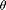 is measured. Furthermore, we will use Simulink's built-in capabilities to automatically tune the PID controller. Note that this automated PID tuning capability requires that you have the Simulink Control Design toolbox.
Follow the steps given below to design a PID controller for our system.
- Remove the Gain blocks for the state feedback gain K and the precompensator Nbar. Also, delete the feedback signal branched off from the state vector x and re-connect it from the output .
- Insert a PID Controller block from the Simulink/Continuous library and place it immediately following the negative feedback Sum block.
The resulting model should appear as follows.
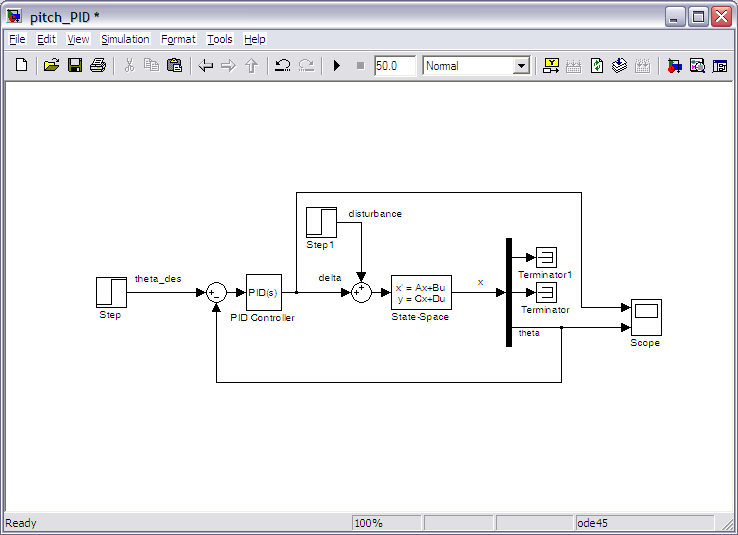
Next, double-click on the PID Controller block. The following window will appear.
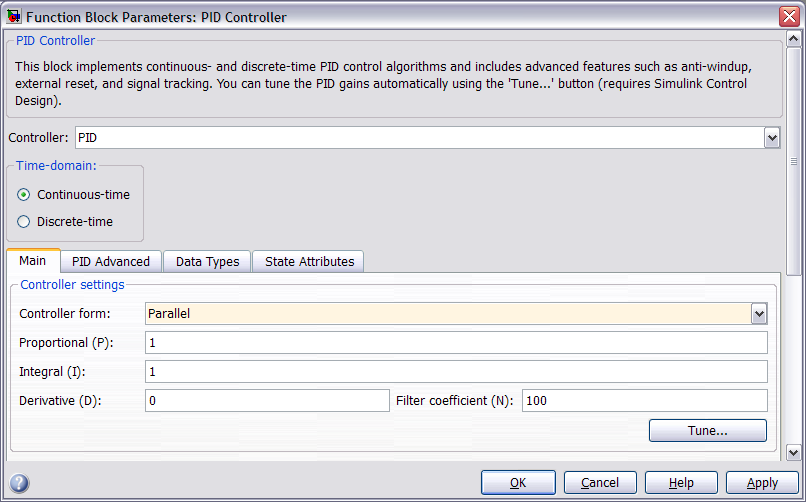
We will assume the default parameters shown above, which correspond to a PID controller with low-pass filter on the derivative term. More specifically, the controller structure is shown below where the Filter Coeffient (N) defines the time constant (equal to 1/N) of the first-order low pass filter on the derivative term.
(1)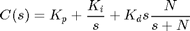
The default values of the PID controller are given in the window above and can be manually modified. We, however, are going to find the controller gains using the automated tuning function. This is accomplished by clicking the Tune... button at which point the model is linearized about a default operating point and the PID control gains are tuned to balance the system's performance and robustness. In our example, the model is already linear. The figure below shows the window that will appear.
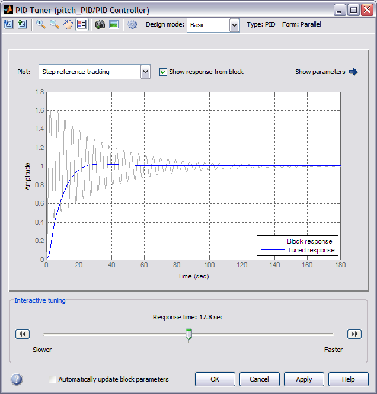
Initially the response of the system with current controller gains is shown in grey and the response of the system with proposed tuned parameters are shown in blue. In order to make the figure more clear, go ahead and check the Automatically update block parameters box to apply the tuned parameters to our Simulnk model. With this set, we can then uncheck the Show response from block since the current controller now matches the proposed controller. Finally, right-click on the body of the plot to add characteristics to the step response to help us assess whether or not our requirements have been met. Inspection of the above plot seems to indicate that the response with newly tuned controller is too slow.
We can then speed up the response by scrolling the Response time bar to the right. If the limits of the bar as given are insufficient, you can press the buttom marked by double-arrows on the right-end of the bar to rescale the available response times. In general, we would like to make the system just fast enough to meet our requirements with margin, but no faster. The reason being a faster response will generally come at the cost of increased control effort. The system behavior with a response time setting of 0.0894 seconds more than meets are given goals as shown below. A faster than necessary response time is chosen so that our settling time goal is met even with the disturbance.
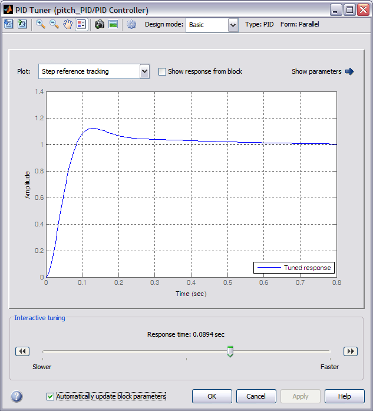
You can also click the Show parameters arrow to display the resulting control gains and performance measures. To see the performance of this controller (including the required control effort), run the simulation and scale the output shown on the scope to generate a figure like the one shown below.
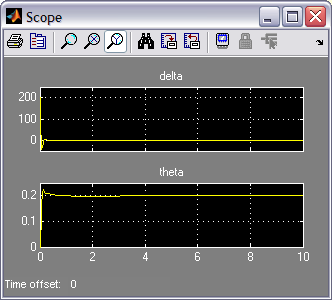
Inspecting the above, a couple of things stand out. One the disturbance is corrected for in steady-state because the PID controller we are using includes an integral term. Additionally, the control effort required by this controller is much greater than that required by our state-feedback controller. This is likely because the algorithm used for the automated tuning did not account for the control effort, or if it did, the control effort was not weighted as heavily as it was in the cost function we defined for the Linear Quadratic Regulator.
In practice, it is likely that the elevator angle of the aircraft would be limited to something like that -25 degrees (-0.4363 rad) to +25 degrees (0.4363 rad). To ensure that we don't go beyond this limit, we can set the controller to saturate. This is accomplished under the PID Advanced tab of the PID Controller block settings window by checking the Limit output box and entering "0.4363" for the Upper saturation limit and "-0.4363" for the Lower saturation limit as shown in the figure below.
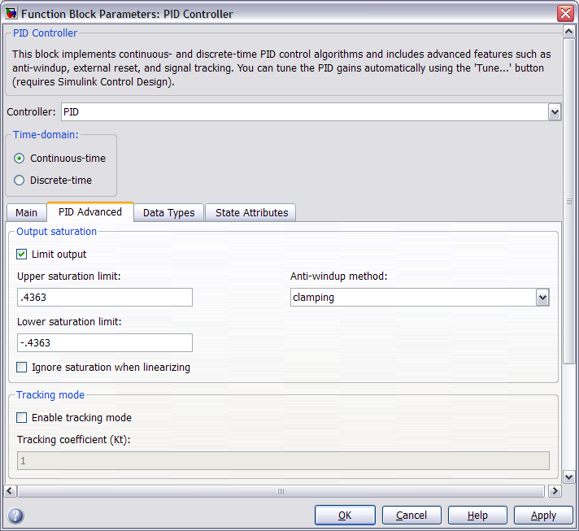
A problem with PID control that arises when an actuator saturates is that the integrator term can continue to integrate the error, essentially asking for greater and greater control, even when the control effort has saturated. This is problematic because when the error eventually does begin to decrease, the control effort will continue to be saturated because the integrator has built up such a large value. This makes the system sluggish because it can take a long time for the integrator to "unwind." This PID control block can help with this problem by applying an integrator anti-windup strategy. This option is also set under the PID Advanced tab as shown in the figure above. We will choose the clamping option for Anti-windup method. This strategy essentially stops the integrator from integrating when the actuator saturates and then turns it back on when the controller output returns to within the saturation limits.
After choosing these options, applying these gains and running the simulation generates the following results which seem to meet our requirements, even in the presence of the disturbance as shown below. Notice that the control effort remains within the limits of -0.4363 to 0.4363 radians and has the effect of reducing the system's overshoot.
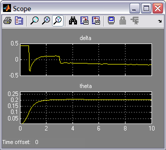